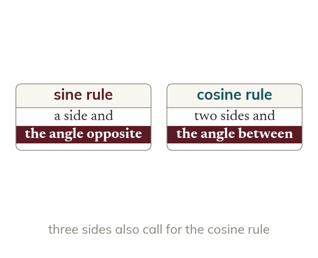
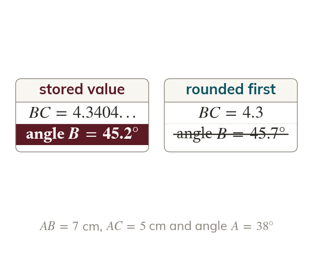
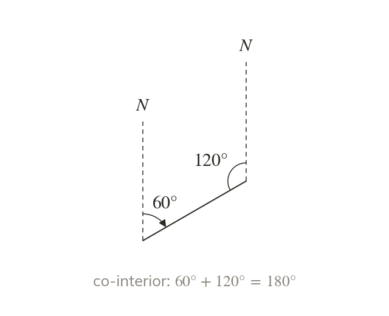
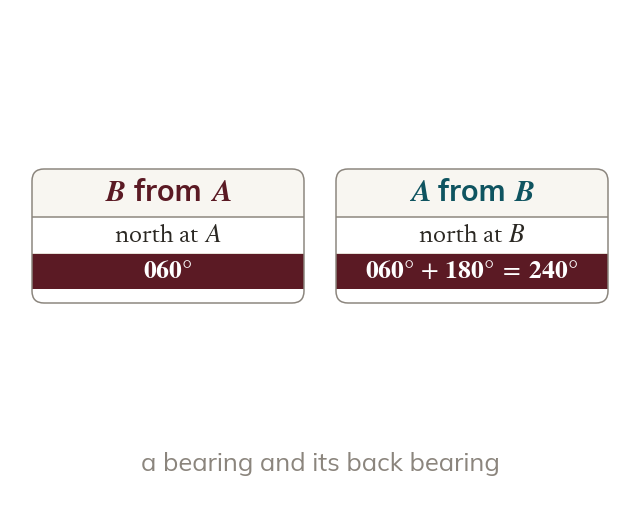

Look for a complete pair
A side with its opposite angle calls for the sine rule. With no complete pair, use the cosine rule: three sides, or two sides and the angle between them.
Problems from surveying and navigation do not say which rule to use. Choosing the rule from what is known, and keeping full accuracy through several steps, is what exam questions on triangles test.
Work down the page at your own pace. Write every answer in your book first, then click to check it.
Read each card, then follow the worked examples one step at a time.

A side with its opposite angle calls for the sine rule. With no complete pair, use the cosine rule: three sides, or two sides and the angle between them.

Store each intermediate answer in the calculator and use it in the next step. Round only the final answer.
Pick an answer. If it's wrong, the feedback tells you which mistake it was.
Read each card, then follow the worked examples one step at a time.

The north lines at two points are parallel, so co-interior angles between them add up to Work out each angle inside the triangle from the bearings before using a rule.

The bearing of from is measured clockwise from north at . The bearing of from differs by
Pick an answer. If it's wrong, the feedback tells you which mistake it was.
Finished? Next lesson: 10.1 Angles in All Four Quadrants.
For each skill, tap the one that is true for you today. Your Revise pages start with anything you mark Not yet.
Your ratings are saved on this device only.
Log in, then search for a code to practise that skill.